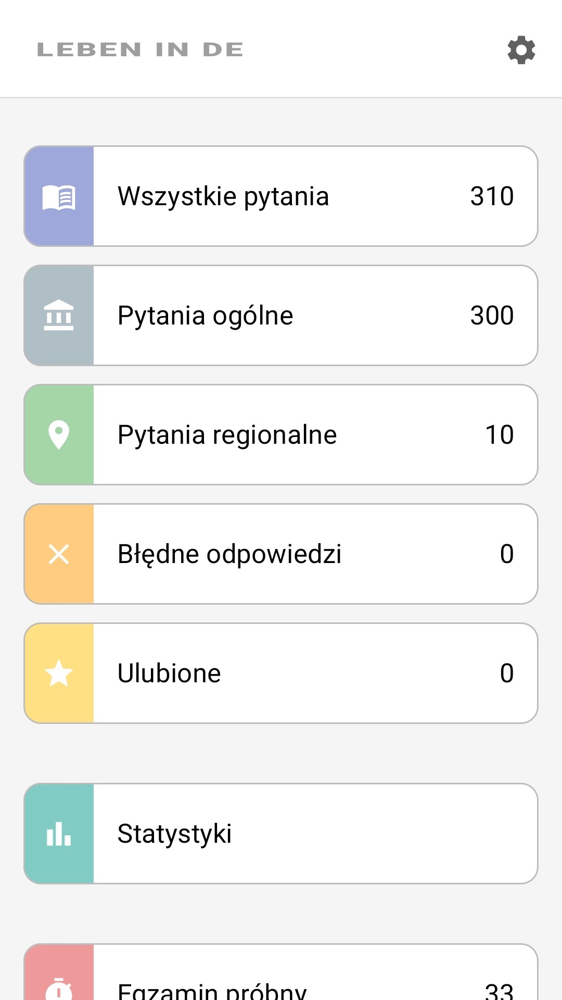
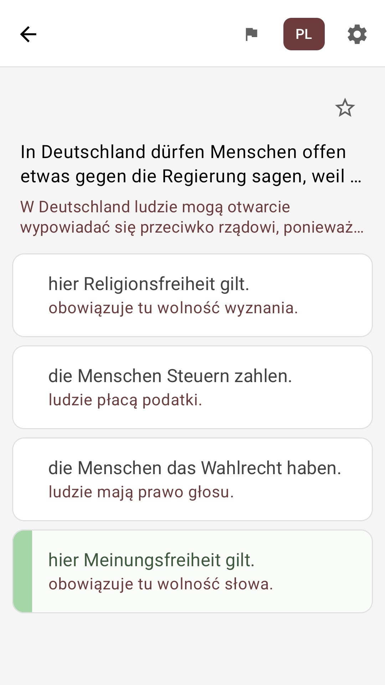

Wszystkie 310 pytań
300 pytań ogólnych plus 10 pytań Twojego kraju związkowego — pełny oficjalny katalog.
Leben in Deutschland · Einbürgerungstest
Wszystkie 310 oficjalnych pytań testu „Leben in Deutschland” z tłumaczeniem na polski. Ucz się łatwo, we własnym tempie i bez internetu.
Bezpłatnie · Działa offline · Pytania dla wszystkich 16 krajów związkowych

Każde pytanie wyświetla się po niemiecku — jak na prawdziwym egzaminie, a pod nim tłumaczenie na polski. Uczysz się jednocześnie materiału i sformułowań, które spotkasz na teście.
W aplikacji są tłumaczenia na ponad 100 języków — ale najważniejsze, że Twój język już tam jest.
In Deutschland dürfen Menschen offen etwas gegen die Regierung sagen, weil …
W Niemczech ludzie mogą otwarcie krytykować rząd, ponieważ …
hier Meinungsfreiheit gilt.
obowiązuje tu wolność słowa.
die Menschen Steuern zahlen.
ludzie płacą podatki.
Pytanie 1 z 310 · tłumaczenie można ukryć jednym dotknięciem
Te same karty co w aplikacji: proste, czytelne, bez zbędnych dodatków.
300 pytań ogólnych plus 10 pytań Twojego kraju związkowego — pełny oficjalny katalog.
Test próbny: 33 pytania i limit 60 minut — te same zasady co na oficjalnym egzaminie.
Po każdej odpowiedzi od razu widzisz, czy jest poprawna — uczysz się na bieżąco.
Osobny tryb z pytaniami, na które odpowiedź była błędna — uzupełniaj braki celowo.
Oznaczaj trudne pytania gwiazdką i wracaj do nich, kiedy chcesz.
Ucz się w metrze, w kolejce, gdziekolwiek — internet w ogóle nie jest potrzebny.
Interfejs — po polsku. Spokojny, jasny design, nic zbędnego.



Od instalacji do gotowości na egzamin.
Zainstaluj bezpłatnie, wybierz polski i swój kraj związkowy.
Czytaj pytania z tłumaczeniem, oznaczaj trudne i powtarzaj swoje błędy.
Sprawdź się w trybie egzaminu — i idź na prawdziwy test ze spokojem.
Bezpłatnie. Po polsku. Działa offline.
To prywatny projekt edukacyjny, a nie oficjalna aplikacja Federalnego Urzędu ds. Migracji i Uchodźców (BAMF). Aplikacja nie jest powiązana z żadnymi organami państwowymi i nie reprezentuje żadnych oficjalnych instytucji.
Pytania testowe opierają się na oficjalnym katalogu pytań BAMF. Oryginalna treść jest opublikowana w języku niemieckim w centrum testowym online BAMF.
Tłumaczenia zostały wygenerowane przez AI, aby pomóc użytkownikom z ograniczoną znajomością niemieckiego, i mogą zawierać nieścisłości. Jeśli uważasz, że tłumaczenie warto poprawić, możesz zgłosić to deweloperowi bezpośrednio z aplikacji. Prawnie wiążący jest wyłącznie niemiecki oryginał pytań.
Treść aplikacji służy wyłącznie do przygotowania się do egzaminu. Mimo starannego opracowania nie gwarantujemy dokładności, kompletności ani aktualności informacji; wszelka odpowiedzialność za bezpośrednie lub pośrednie szkody wynikające z korzystania z aplikacji jest wyłączona. Wiążące są wyłącznie oficjalne materiały BAMF.